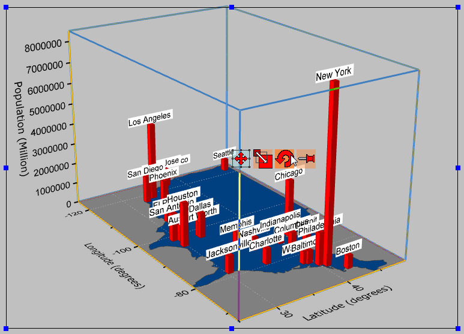

ラベル付き3D棒グラフ
3D-Bar-with-Labels
サマリー
このチュートリアルは、以下のようなグラフを作成する方法を示しています。
必要なOriginのバージョン: Origin 2015 SR0以降
学習する項目
このチュートリアルでは、以下の項目について説明します。
- 平面化した塗りつぶし曲面図の作成と編集
- 作図のセットアップを使用して3D棒グラフを追加する
- 3D棒グラフ上にラベルの追加と編集
ステップ
このチュートリアルは、チュートリアルデータプロジェクト（<Origin EXE フォルダ>\Samples\TutorialData.opj）と関連しています。
行列から平面化された塗りつぶし曲面を作成する
Tutorial Data.opj を開き、folder 3D Bar with Labelsを開きます。
- 行列MBook1B アクティブ化します。
- メニューから作図：3D：3Dカラーマップ曲面を選択し、スピードモードがオンになっている3Dグラフを作成します。

- Originメニューから、フォーマット：レイヤを選択します。
- レイヤの大きさ/描画スピードタブを開き、行列データ、次元あたりの最大ポイント数のチェックを外します。これによりスピードモードがオフになり、データセットの全てが表示されます。適用ボタンをクリックします。
- Layer1の項目を開き、データを選択します。
- USのグラフを平面化するには、面タブの平面のチェックボックスにチェックをつけます。
- 塗りつぶしタブで、行列から等高線を塗りつぶすを選択し、行列の情報を参照して色をセットします。裏面を塗りつぶすのチェックは外します。
- カラーマップ/等高線のタブを開き、行列の色を設定するためにレベルをクリックします。
- レベルの設定ダイアログで、主レベル数を2にセットします。また、ダイアログでは総レベル数を2にしてOKをクリックします。
- 色塗りのそれぞれのカラーレベルでクリックし、塗り方ダイアログを開きます。3つの色、黒、灰色、カスタムカラー（RGB：0, 64, 128）を設定します。
- メッシュタブの有効にするのチェックを外し、OKボタンをクリックします。
- グラフは下図のようになります。
3D棒グラフを追加し、編集する
- グラフをアクティブにして、Originメニューからグラフ操作：作図のセットアップを選びます。作図のセットアップダイアログが開きます。
- 左上にある利用可能なデータをフォルダ内のワークシートにします。これにより、Book2B のデータが使用可能になり、同じグラフに追加できます。
- Book2B を選択し、グラフタイプを3D - 棒グラフに設定します。中央のパネルで、X、Y、Zをそれぞれ A1、G1、Dとします。追加ボタンをクリックして3D棒グラフを現在のレイヤに追加します。
OKをクリックしてダイアログボックスを閉じます。
 | 作図のセットアップダイアログで3つのパネルを全ての表示するために ボタンをクリックしてグラフタイプパネルを開き、再度をクリックして利用可能なデータパネルを開きます。 ボタンをクリックしてグラフタイプパネルを開き、再度をクリックして利用可能なデータパネルを開きます。
詳細な情報は作図のセットアップで作図を参照してください。
|
- 3D棒グラフを編集するには、ダブルクリックして作図の詳細ダイアログを開きます。パターンタブで、縁の色をワインにし、塗りつぶしの色を赤にします。アウトラインタブをクリックし、幅(%)を10にします。適用ボタンをクリックします。
- ラベルタブに行き、有効にするにチェックを付けます。
- ラベル形式をCol(B):"City" にし、ワークシートの列Bに入力されている市の名前が表示されます。
- Zの位置を上外側にし、オフセットを10にします。向きをYZ面に設定します。他の設定を以下のように設定し、OKをクリックします。
- この時点では、軸スケールが小さすぎるのでラベルが表示されません。垂直の軸（Z 軸）上でダブルクリックし、スケールタブを開きます。開始と終了の値を0と8000000に設定します。OKをクリックして適用します。

- グラフ上でダブルクリックして、作図の詳細ダイアログを開き、左パネルでGraph1を選択します。表示属性の色を明るい灰色にします。OK をクリックして、ダイアログを閉じます。
- Z 軸タイトルをダブルクリックしてPopulation (Million)に変更します。
- 最終的に、下図のようなグラフになります。
- このグラフは3DOpen GLグラフのため、
 ツールバーの回転ツールボタンを使用するか、Rキーを押したままマウスを使用すると回転できます。 また、グラフをクリックしてボタンを選択すると下図のように回転モードに入ります。また、3D回転操作ツールバーを使用することもできます。
ツールバーの回転ツールボタンを使用するか、Rキーを押したままマウスを使用すると回転できます。 また、グラフをクリックしてボタンを選択すると下図のように回転モードに入ります。また、3D回転操作ツールバーを使用することもできます。
